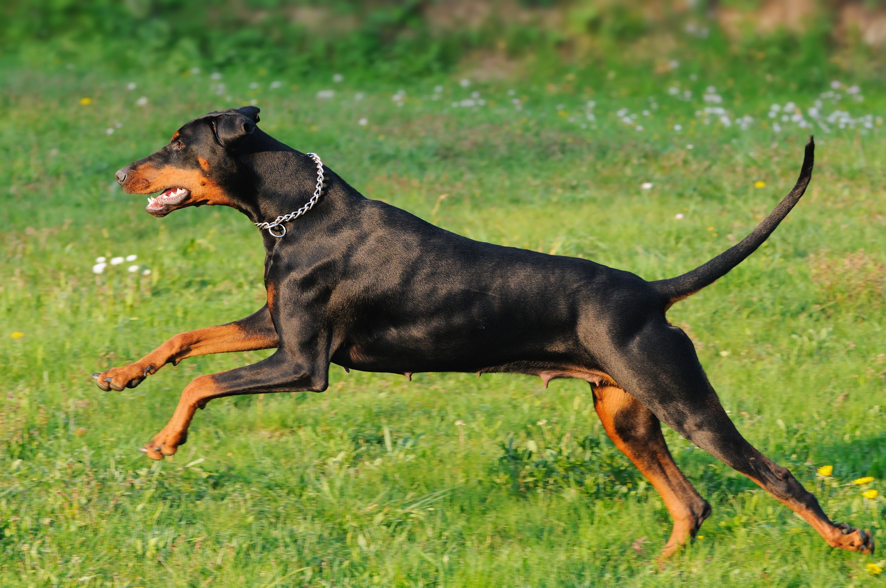

Introdução

Cães são os melhores amigos do homem! Conhecidos por sua lealdade, inteligência e capacidade de trazer alegria aos nossos lares, os cães de estimação ocupam um lugar especial em nossas vidas.
Por que ter um cão?
- Companhia: Cães oferecem companheirismo incondicional, aliviando a solidão e promovendo o bem-estar emocional.
- Saúde: A interação com cães pode reduzir o estresse, diminuir a pressão arterial e aumentar os níveis de serotonina, o hormônio da felicidade.
- Atividade física: Passeios e brincadeiras com cães incentivam a prática de atividades físicas, beneficiando tanto o cão quanto o tutor.
Raças de Cachorros
Rotweiller
O Rottweiler é uma raça que inspira tanto admiração quanto respeito. Originário da Alemanha, esse cão de grande porte é conhecido por sua força, inteligência e lealdade. Historicamente utilizado como cão de guarda e pastor, o Rottweiler é um excelente protetor de sua família. Apesar da aparência imponente, quando bem socializado e treinado, ele pode ser um companheiro amoroso e gentil. É importante ressaltar que, devido ao seu porte e força, o Rottweiler exige um dono experiente e comprometido com seu adestramento e socialização desde filhote.
Dobermann Pinscher
O Dobermann é uma raça de cão que se destaca por sua elegância e porte atlético. Originário da Alemanha, foi desenvolvido como cão de guarda e proteção. Sua aparência imponente, com pelagem curta e lisa, geralmente preta ou marrom com marcações castanhas, esconde um cão inteligente, leal e obediente. O Dobermann é conhecido por seu forte instinto protetor e sua capacidade de aprender comandos rapidamente. Apesar de sua reputação como cão de guarda, quando bem socializado desde filhote, ele pode ser um companheiro amoroso e gentil dentro de casa. É importante ressaltar que o Dobermann exige um dono experiente e dedicado, capaz de fornecer o treinamento e a socialização adequados para que ele desenvolva todo o seu potencial.
Pinscher
O Pinscher é uma raça de cão que, apesar do pequeno porte, possui uma personalidade marcante e cheia de energia. Originário da Alemanha, o Pinscher é conhecido por sua inteligência, lealdade e coragem. Com pelagem curta e lisa, geralmente nas cores vermelho-cervo ou preto e ferrugem, o Pinscher é um cão alerta e vigilante, sempre atento ao seu redor. Sua agilidade e vivacidade o tornam um excelente companheiro para atividades físicas e brincadeiras. Apesar de seu tamanho compacto, o Pinscher possui um instinto protetor bastante desenvolvido, sendo um guardião leal de sua família.
Cuidados com Cachorros
Uma dieta balanceada e de qualidade é fundamental para a saúde do seu cão. Consulte um veterinário para obter orientações sobre a alimentação adequada para a raça e idade do seu pet.
A vacinação protege o seu cão contra diversas doenças. Mantenha a carteirinha de vacinação sempre atualizada.
Leve seu cão para consultas regulares ao veterinário para acompanhamento da saúde e prevenção de doenças.
Mantenha seu cão limpo e bem cuidado, com banhos regulares e escovação dos pelos.
Proporcione atividades físicas diárias para que seu cão se mantenha saudável e feliz.